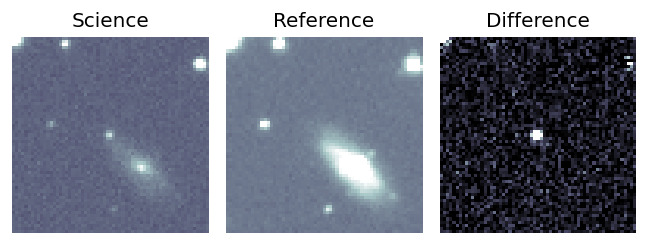
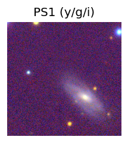
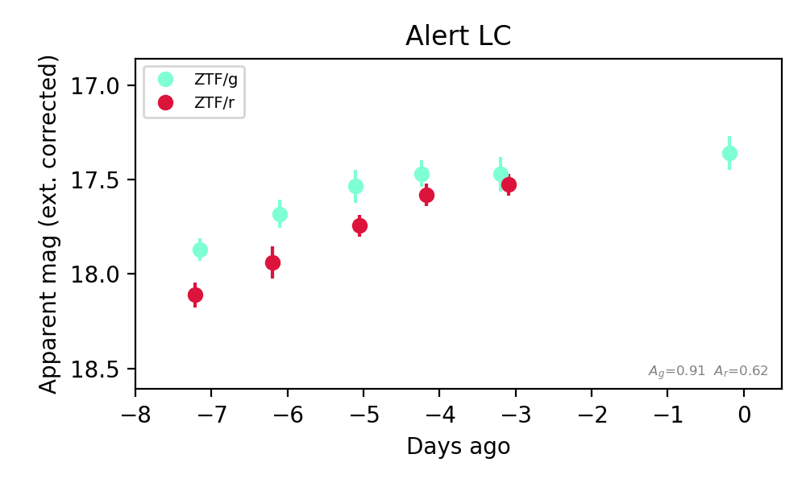

Candidate List 20260929Last night — ZTF: 1,900 passed basic cuts (25 young) · LSST: 0 passed basic cuts (0 young)Previous Day Next Day
Section 1: New Sources (age<1d) Section 2: Old (1-5d) sources observed last nightplaceholder
Section 1: New Afterglow/FBOT Cands Last Night (0)
Section 2: Older Sources Observed Last Night (5)
0. [ZTF] ZTF26abwqpgt (Afterglow?) [Back to Top] [Share] [Trigger Swift] [Fritz Alert] [Fritz Source] [Lasair]RA, Dec: 257.36063, 46.51575 17h 9m26.55s, 46d30m56.68sGalactic (l, b): 72.35736, 36.47704 ext(g-r) = 0.027


TESS: Sectors [ 24 26 51 52 53 78 79 80 117 118]
SDSS (<15 kpc):Found SDSS phot-z: z=0.09; peak abs mag = -18.98
NED photo-z only: WISEA J170926.95+463054.7 (G, 4.6″) z=0.1023 [zflag PUN] — not used for peak abs mag
PS1: 0 sources in 3 arcsec
LegacySurvey: 1 sources in 3 arcsec Closest: d = 1.54 arcsec, 256.3 deg (east of north) photoz=0.3 (68% bounds 0.04, 0.44), type=REX peak abs mag (ext. corrected) = -21.89 (68% bounds -17.18, -22.89)

Extinction-corrected gr color:
From alerts: 0.7 +/- 99 mag
Rise Rate:
g: 0.14 mag/day
r: 0.1 mag/day
Fade Rate:
g: 0.13 mag/day
r: 0.48 mag/day
1. [ZTF] ZTF26abwqpsg (Afterglow?FBOT?) [Back to Top] [Share] [Trigger Swift] [Fritz Alert] [Fritz Source] [Lasair]RA, Dec: 261.0566, 29.39342 17h24m13.58s, 29d23m36.32sGalactic (l, b): 52.60728, 30.78385 ext(g-r) = 0.04


TESS: Sectors [ 25 26 52 53 79 117 118]
SDSS (<15 kpc):Found SDSS phot-z: z=0.03; peak abs mag = -17.56
PS1: 0 sources in 3 arcsec
LegacySurvey: 1 sources in 3 arcsec Closest: d = 2.29 arcsec, 2.5 deg (east of north) photoz=0.16 (68% bounds 0.07, 0.38), type=REX peak abs mag (ext. corrected) = -21.57 (68% bounds -19.65, -23.7)

Extinction-corrected gr color:
From alerts: 0.11 +/- 0.13 mag
Consistent with synchrotron, g-r>0!
Rise Rate:
g: 0.58 mag/day
r: 0.5 mag/day
Fade Rate:
g: 0.09 mag/day
r: 0.03 mag/day
2. [ZTF] ZTF26abwsmzz (Afterglow?) [Back to Top] [Share] [Trigger Swift] [Fritz Alert] [Fritz Source] [Lasair]RA, Dec: 43.97685, 46.23185 2h55m54.44s, 46d13m54.67sGalactic (l, b): 144.32047, -11.40665 ext(g-r) = 0.292


TESS: Sectors [18 58 85]
PS1: 0 sources in 3 arcsec
LegacySurvey: 0 sources in 3 arcsec

Extinction-corrected gr color:
From alerts: -0.06 +/- 0.11 mag
Consistent with synchrotron, g-r>0!
Rise Rate:
g: 0.08 mag/day
r: 0.71 mag/day
Fade Rate:
3. [ZTF] ZTF26abxpuxo (FBOT?) [Back to Top] [Share] [Trigger Swift] [Fritz Alert] [Fritz Source] [Lasair]RA, Dec: 303.95871, 58.65008 20h15m50.09s, 58d39m0.27sGalactic (l, b): 93.07135, 12.86943 ext(g-r) = 0.391


TESS: Sectors [ 14 15 17 41 55 57 75 76 77 82 83 84 120]
SDSS (<15 kpc):Found SDSS phot-z: z=0.08; peak abs mag = -19.93
PS1: 1 source in 3 arcsec Closest: d = 1.47 arcsec photoz=0.12+/-0.02 peak abs mag = -20.67
LegacySurvey: 0 sources in 3 arcsec

Extinction-corrected gr color:
From alerts: -0.08 +/- 0.17 mag
Consistent with synchrotron, g-r>0!
Rise Rate:
g: 0.2 mag/day
r: 0.26 mag/day
Fade Rate:
4. [ZTF] ZTF26abxwicv (FBOT?) [Back to Top] [Share] [Trigger Swift] [Fritz Alert] [Fritz Source] [Lasair]RA, Dec: 243.05313, 11.15846 16h12m12.75s, 11d 9m30.46sGalactic (l, b): 24.31842, 40.33369 ext(g-r) = 0.063


TESS: Sectors [ 51 117]
NED host (10 arcsec):Found WISEA J161213.27+110928.3 (G, 8.0″); NED spec-z: z=0.0424 [zflag SLS]; peak abs mag = -18.11
PS1: 0 sources in 3 arcsec
LegacySurvey: 1 sources in 3 arcsec Closest: d = 3.45 arcsec, 258.4 deg (east of north) photoz=0.24 (68% bounds 0.05, 0.75), type=PSF peak abs mag (ext. corrected) = -22.14 (68% bounds -18.4, -25.06)

Rise Rate:
r: 0.38 mag/day
Fade Rate: